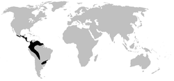

Las ranas de cristal (Sachatamia punctulata) son una familia de anfibios anuros. Se originaron y distribuyen por Sudamérica y también por Centroamérica.
Las ranas de cristal son nativas de los bosques de América Central y Sur, distribuidas desde el sur de México hasta Panamá y, a través de los Andes, desde Venezuela hasta Bolivia, con algunas especies a lo largo de las cuencas de los ríos Amazonas y Orinoco, el macizo de las Guayanas, el sureste de Brasil y el norte de Argentina y toda Colombia, razón por la que esta rana es el símbolo de la moneda de 500 pesos de este país.
Es una rana de tamaño pequeño, mide hasta 3 cm la principal característica de esta es que es de color verde brillante con puntos en el dorso que pueden ser amarillos o naranja y abdomen transparente, además sus huesos son azules.

La rana de cristal es una especie con hábitos nocturnos y aprovecha la puesta del sol para recolectar su alimento, que se basa en pequeños insectos.
Son ranas arbóreas y nocturnas.
Ponen sus huevos sobre hojas o en rocas junto a arroyos. Los machos cantan situados encima o debajo de hojas. Algunas especies entablan combates territoriales. También algunos miembros de la familia protegen sus puestas de huevos frente a posibles depredadores.